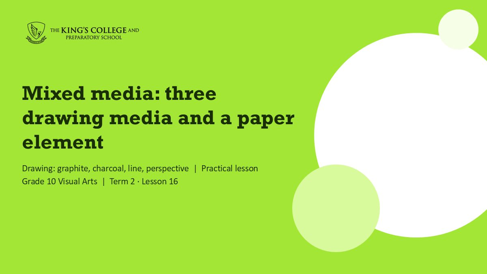

Term 2 · Lesson 16 · Practical lesson
Activity 6, Part A: fruit and vegetable contour
Start here
Today I will
- Draw an organic form with sensitive contour lines
- Use cross-contour lines to suggest curving surfaces
- Photograph my process clearly for my VJ
Think first
Cut a red pepper in half. What do you see that you never noticed when it was whole?
Words to know
- Organic form
- A natural, irregular form, such as fruit, leaves or the body, rather than a geometric one.
- Contour
- A line that follows the edges, folds and surface changes of a form.
- Cross-contour
- Lines that travel across a form to show how its surface curves.
- Process photograph
- A clear photo of your work at a stage of development, used to document your process.
- Documentation
- Recording how your work developed, with photos and notes in the VJ.
Slides

Notes
Contour drawing of organic forms; documenting your process with good photographs.
Contour on organic forms
- Slow line: Move the pencil slowly, as if your eye is travelling along the edge of the form.
- Inside edges: Draw ridges, seeds, folds and leaf veins, not only the outline.
- Cross-contours: A few light lines across the form show whether it bulges or dips.
- Line weight: Heavier lines on shadow edges and overlaps, lighter lines where light hits the form.
- Fill the page: Draw large: the drawing will later be shaded with torn paper and must have room for it.
Taking a good process photograph
- Light: Use daylight near a window; avoid flash and your own shadow across the page.
- Straight on: Hold the phone directly above the work so the page is a rectangle, not a slanted shape.
- Fill the frame: Crop to the artwork; no desks, feet or bags in the background.
- Every stage: Photograph at each stage: start, halfway and finished contour.
Remember
Nature has no straight lines: follow every curve slowly and honestly.
Practical
You need: Fruit or vegetable, pencils, eraser, cartridge paper, phone
Activity 6, Part A: fruit or vegetable contour
- Choose your fruit or vegetable and the most interesting viewpoint, whole or cut.
- Lightly place the form large on the page, leaving a small margin.
- Draw the outer contour slowly, then the inner edges, ridges and seeds.
- Add a few cross-contour lines where the form curves strongly.
- Photograph the start, middle and end stages for your VJ.
- Annotate: why you chose this view and which areas will be darkest later.
- From today, start collecting coloured paper scraps (magazines, wrapping paper) for Part A.
Test yourself
- What is the difference between an organic and a geometric form?
- What do cross-contour lines show?
- Give two rules for a good process photograph.
Show answers
1. An organic form is natural and irregular; a geometric form is regular and measured, like a cube or cylinder. 2. How the surface of a form curves. 3. Any two: good daylight, straight on from above, fill the frame with the work, photograph each stage.
Finished early?
Cross-contour pepper
Show the curve of a surface with lines alone.
- Sketch a simple organic form, such as a pepper or an apple, in your VJ.
- Draw the outer contour slowly.
- Add five or six cross-contour lines that wrap across the form.
- Write one sentence on how the lines show where the form bulges or dips.